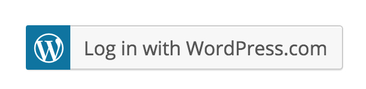
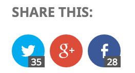

Get a headstart with install.php & Jetpack
Discover how to customize your WordPress installation to earn some time in your projects.
Automattic
- 5-minute install.
- Is it really 5 minutes?
- Think of the things you have to do after each installation.
- Change General Settings (Timezone, Week Start, Default Category, Permalinks).
- Remove the “Hello World” post.
- Create basic pages (Contact, About, Subscribe).
- Create new Users (for your client, for your editors).
- Activate plugins.
Install WP, with a twist!
- Git repo with the latest stable version of WordPress.
- Submodules for the plugins you use on each site you set up.
- Custom install.php file.
install.php
- wp-content/install.php
- Runs when you install WordPress.
- Use it to overwrite default WP settings.
/**
* Set a site description.
*/
update_option( 'blogdescription', 'A site description' );
/**
* Set Timezone.
*/
$timezone = "Europe/Bucharest";
update_option( 'timezone_string', $timezone );
/**
* Start the week on Monday.
*/
update_option( 'start_of_week', 1 );
/**
* Update Permalinks to use only post names.
*/
update_option( 'selection','custom' );
update_option( 'permalink_structure','/%postname%/' );
$wp_rewrite->init();
$wp_rewrite->flush_rules();
/**
* Create an editor.
*/
$username = 'jeherve';
$userdata = array(
'user_login' => $username,
'user_pass' => wp_generate_password(),
'user_email' => 'jeremy@jeremy.hu',
'user_url' => 'http://jeremy.hu/',
'role' => 'editor'
);
$self_id = username_exists( $username );
if ( ! $self_id ) {
$self_id = wp_insert_user( $userdata );
update_user_option( $self_id, 'default_password_nag', true, true );
}
/**
* Delete the default post.
*/
wp_delete_post( 1, true );
/**
* Enable your favourite plugins.
*/
require_once( ABSPATH . 'wp-admin/includes/plugin.php' );
// Your plugin list.
$plugin_list = array(
'akismet/akismet.php',
'jeherve-func/jeherve-func.php',
'jetpack/jetpack.php',
'vaultpress/vaultpress.php'
);
// Enable each one of them.
foreach( $plugin_list as $plugin ) {
$plugin_dir = WP_PLUGIN_DIR . "/{$plugin}";
if ( file_exists( $plugin_dir ) && ! is_plugin_active( $plugin ) ) {
activate_plugin( $plugin );
}
}
Customize your WP installation with plugins
- Basic Security options in a Must-Use (mu) plugin.
- Settings to overwrite default options in WordPress.
- Configure and customize plugins.
Security Options
/**
* Force deactivate pingbacks.
*/
function jeherve_deactivate_pings( $methods ) {
unset( $methods['pingback.ping'] );
return $methods;
}
add_filter( 'xmlrpc_methods', 'jeherve_deactivate_pings' );
// No one can register, ever.
function jeherve_option_users_can_register( $value ) {
return '0';
}
add_filter( 'pre_option_users_can_register', 'jeherve_option_users_can_register' );
// Force the admin email address.
function jeherve_option_admin_email( $value ) {
return 'jeremy@jeremy.hu';
}
add_filter( 'option_admin_email', 'jeherve_option_admin_email' );
Auto-update Options
// Automatically update plugins.
add_filter( 'auto_update_plugin', '__return_true' );
// Automatically update themes.
add_filter( 'auto_update_theme', '__return_true' );
Functionality plugins
- Paste code snippets there instead of in your theme's functions.php.
- Customize other plugins.
Set up Akismet
/**
* Automatically set Akismet to use your API Key.
* http://apikey.wordpress.com/
*/
function jeherve_akismet_key() {
return 'YOUR_API_KEY';
}
add_filter( 'akismet_get_api_key', 'jeherve_akismet_key' );
Why should I install it?
- It includes all the features you need when starting a new blog.
- It's modular. You can use one of its features, or all of them.
- It's easier to update one plugin than 30.
- Leverage the WordPress.com cloud, thus saving resources on your own server.
- Free support! 😊
Remove modules
// Do not activate, and hide the Stats module so your clients can't activate it later.
function jeherve_kill_stats( $modules ) {
unset( $modules['stats'] );
return $modules;
}
add_filter( 'jetpack_get_available_modules', 'jeherve_kill_stats' );
Photon: lossy image compression
// Compress the quality of all jpeg files.
function jeherve_loss_compression_photon( $args ) {
$args['quality'] = 80;
return $args;
}
add_filter( 'jetpack_photon_pre_args', 'jeherve_loss_compression_photon' );

// Redirect all logins to WordPress.com.
add_filter( 'jetpack_sso_bypass_login_forward_wpcom', '__return_true' );
// Or hide your log in form, and only show a WordPress.com log in button.
add_filter( 'jetpack_remove_login_form', '__return_true' );

/**
* Disable counts from Jetpack Sharing buttons.
*/
add_filter( 'jetpack_sharing_counts', '__return_false' );
/**
* Display 6 Related Posts instead of 3.
*/
function jeherve_more_related_posts( $options ) {
$options['size'] = 6;
return $options;
}
add_filter( 'jetpack_relatedposts_filter_options', 'jeherve_more_related_posts' );
Need more filters?
Functionality plugins: get a headstart on your new site
- Customize other plugins as well.
- Earn some time when setting up new sites.
- Don't do the same thing over and over.
- Get to know the plugins you use every day a bit better.
Questions?